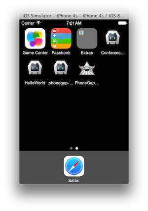
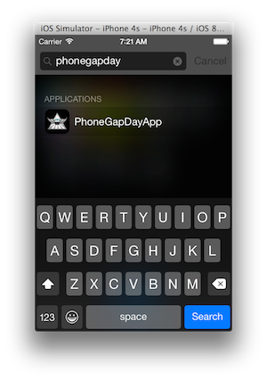

This module is going to take you through a couple steps to polish the application and give you some tips on configuration settings to be aware of.
Open the assets/css/styles.css and add the following to the bottom to style the header bar, search bar and icons:
.media>p {
color: #444;
}
.bar-nav {
background-color: #209dc2;
color: #ffffff;
}
.title {
color: #ffffff;
}
.bar-nav .icon {
color: #ffffff;
}
.bar-header-secondary {
background-color: #eeeeee;
}
Test the application

It looks better, but you may notice the status bar header seems to overlap the space where the application header resides. The next step will address this.
In iOS7, the status bar overlaps the application views. As a result, the status bar text may collide with the application’s header text as shown in the screenshot above. You can fix this issue using the statusbar plugin.
Add the status bar plugin:
phonegap plugin add org.apache.cordova.statusbar
There are two options for using the statusbar to fix this issue, via configuration or programmatically.
In either case, set the overlay setting to false to move our app content below the status bar. Also use the other options to set the status bar background style and text/icons to match the app header colors:
Choose to implement ONE of the options below:
Configuration (config.xml) Open the config.xml file and add the following lines to the end of the preferences:
<preference name="StatusBarOverlaysWebView" value="false" />
<preference name="StatusBarBackgroundColor" value="#209dc2"/>
<preference name="StatusBarStyle" value="lightcontent" />
Programatically Open app.js and add the following code at the top of the deviceready handler:
StatusBar.overlaysWebView( false );
StatusBar.backgroundColorByHexString('#209dc2');
StatusBar.styleLightContent();
Now build and run the application again to see the results:

We can suppress the accessory keyboard that pops up with the Done button on it as shown in this screenshot by using a custom plugin from the Ionic Framework and then use a method to hide it:

Add the Ionic Keyboard Plugin:
phonegap plugin add https://github.com/driftyco/ionic-plugins-keyboard
In app.js, add the following code at the top of the deviceready handler:
if (cordova.plugins.Keyboard)
cordova.plugins.Keyboard.hideKeyboardAccessoryBar(true);
Now build the application again and test to see the result.

You may notice if you pull down on your app from the header bar, you will see a black space between it and the statusbar and a bounce effect on iOS as shown below.

You can disable this effect by setting a property in the config.xml file.
In the root project config.xml, add the following property to the end of the preferences:
<preference name="DisallowOverscroll" value="true" />
Now build and run the application again and the webview (your app) should stay in place.
You may want to set a default application icon to be used for all the icons in your application.
In the root project’s config.xml, add the following property to point to the icon phonegap_wings.png. (You can copy this file into your root from the initial project download).
<icon src="phonegap_wings.png" />
Now build and run the application again. If you go to the home screen (shift+cmd+h from simulator), you will see the icon is now displayed as wings. You can see that it’s also set for the spotlight search.
 
There’s a lot more you can do with setting icons and splash screens than what is shown here. See this article for more details.